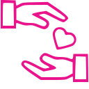

Devenir Bénévole
Toutes les bonnes volontés et les savoir-faire sont utiles pour développer les diverses actions de l’association. Postulez à une offre ou proposez votre aide !

Faire un don
La générosité des donateurs est essentielle pour le fonctionnement des Restos. Sans les dons, nous ne pourrions par assurer nos missions sociales.

Ou nous trouver ?
Cherchez les Associations Départementales les plus proches de chez vous ! Coordonnées, activités proposées... Retrouvez toutes les informations qui vous seront utiles.